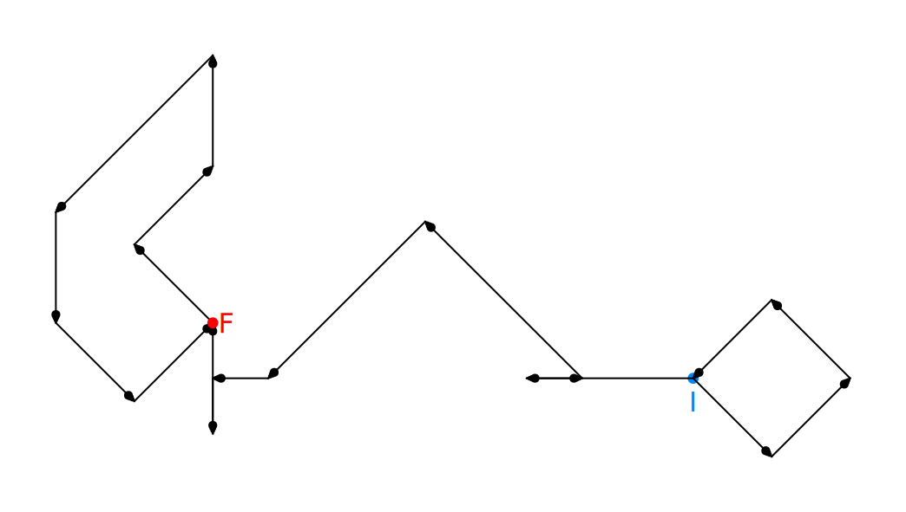
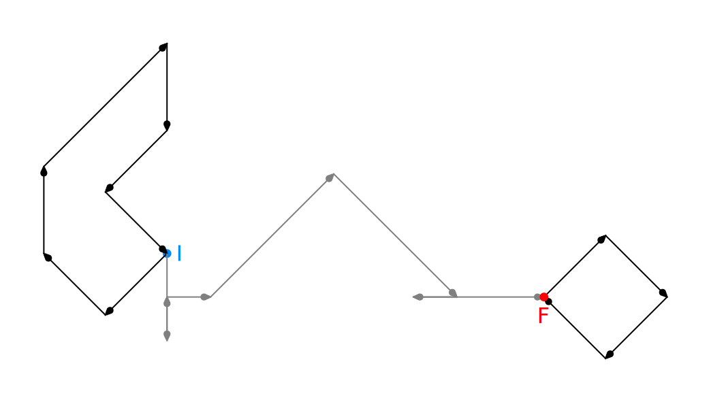

"Will you, won't you, will you, won't you, join the dance?"
– O grifo e a falsa tartaruga, Quadrilha da Lagosta
Com o aquecimento global e o crescente risco de proliferação de basiliscos, o Centro de Conservação de Grifos está cada vez mais preocupado com a baixa taxa de reprodução desses animais. É cada vez mais raro encontrar ninhos de grifo na natureza, uma vez que a procura por seus ovos de ágata e seus ninhos de ouro ainda leva muitos aventureiros a infringir as leis de proteção ambiental. Por conta disso, as técnicas de manejo e reprodução assistida vêm se desenvolvido bastante.
Os pesquisadores do Centro descobriram que a taxa de fertilidade de um cruzamento entre grifos depende muito da compatibilidade entre as danças de acasalamento do macho e da fêmea. Os machos dessa espécie não se preocupam muito com a compatibilidade de seus genes. Há vários casos de machos de grifo copulando com outras espécies relatados na literatura. Como você sabe, é do cruzamento de grifos com éguas que nascem os hipogrifos.
Já as fêmeas, são extremamente seletivas. O cio só acontece a cada três anos. O ritual de acasalamento envolve uma complicada dança realizada no dia primeiro de outubro. Uma fêmea e um macho se encontram. A fêmea dança e observa a dança do macho. Caso uma fêmea julgue que o macho não seja compatível, ela vai se retrair e não terá filhotes pelos próximos três anos.
Felizmente, é possível evitar que a fêmea se retraia conhecendo de antemão a forma de dança de cada indivíduo. Ao longo dos anos, o Centro registrou as danças dos indivíduos de sua manada e observou que cada animal sempre repete a mesma dança. Além disso, foi possível fazer uma descrição detalhada das fases da dança e de que aspectos de cada fase são considerados pelas fêmeas para o julgamento de compatibilidade. A princípio, os pesquisadores acreditavam que o intrincado padrão de guinchos, a forma do bater das asas e o ondular da cauda fossem relevantes, mas, a custo de muitas tentativas e de muitos erros, acabaram por constatar que apenas a ordem, orientação e amplitude dos deslocamentos no espaço é que são distintivas.
Após um trimilique que marca o começo da dança, começa a primeira fase da dança da fêmea, que termina quando ela volta, após alguns passos, ao ponto de partida da dança. Começa, então, a segunda fase, que termina quando, imediatamente após um passo em alguma direção, a fêmea faz um passo de maior amplitude na mesma direção, mas em sentido contrário, passando do ponto de onde viera no passo anterior. A partir daí, começa a terceira fase que segue até que a fêmea pare completamente de dançar e saia voando para escolher um ponto de observação para a dança do macho.
As regras observadas pela fêmea em cada fase para consideradar a dança do macho compatível são:
Na primeira fase, a dança do macho deve ter a mesma forma da dança da fêmea, não importando se for rotacionada no espaço. O macho deve fazer sempre passos maiores do que os da fêmea, mas mantendo a proporcionalidade entre as amplitudes dos passos sucessivos. Os ângulos entre passos também devem ser preservados.
A segunda fase é mais livre. O macho só não pode ultrapassar a quantidade de passos da fêmea nesta fase. O macho marca da mesma maneira que a fêmea a separação entre a segunda e a terceira fases.
Na terceira fase, voltam a ser relevantes para a fêmea as proporções entre as amplitudes dos passos dentro dessa fase, mas os ângulos não precisam mais ser mantidos com tanta precisão: a fêmea não se incomodará se o macho errar o ângulo em até 60°, para mais ou para menos, a cada virada. O macho também sai voando ao final da sua terceira fase. A fêmea rejeita machos cujo número de passos na terceira fase não coincida com o número de passos de sua própria terceira fase.
Em alguns casos, a dança original do macho é incompatível. Entretanto, os pesquisadores perceberam que poderiam produzir um filme holográfico da dança do macho e editar o filme, de maneira que a dança resultante, quando compatível, poderia ser transmitida à fêmea de maneira que a fêmea reconheça o macho e aceite o cruzamento. A única edição aceita pela fêmea é a reversão, em que a dança do macho é apresentada de trás para frente, revertida no tempo. Veja a figura abaixo:
Outras formas de edição que não a reversão do vídeo resultaram em fêmeas extremamente ariscas, atacando tratadores, recusando-se a alimentar-se por semanas. Como exemplo, abaixo estão duas versões do mesmo vídeo: a primeira é a original e a segunda a reversa.
Vídeo original.
Vídeo reverso.
Nas figuras abaixo, está representado um exemplo de pareamento possível. O primeiro diagrama é a dança registrada de uma fêmea, os passos da primeira e terceira fases estão em preto e os da segunda estão em cinza. Os dois diagramas seguintes representando a dança de um macho. O primeiro deles é o original; o segundo é o revertido, que é compatível com a dança da fêmea.
 Figura 3: Diagrama da dança de um macho originalmente incompatível.
 Figura 4: Diagrama revertido da dança do mesmo macho.
Tarefa
Você deve escrever um programa que receba o registro de dança de um grifo fêmea e de um grifo macho e decida se eles são compatíveis.
Entrada: As danças foram registradas como séries de passos. A entrada começa com uma linha com o número de passos da fêmea e o número de passos do macho, nessa ordem. As duas linhas seguintes trazem as danças da fêmea e do macho, respectivamente. Cada passo está registrado como dois números. O primeiro número indica umas das oito orientações de movimento (veja figura 6, abaixo) e o segundo indica o deslocamento em metros. passos seguidos sempre têm orientações diferentes. Todos os números são inteiros não negativos. Todas as fases da dança da fêmea têm no mínimo dois passos cada.
Saída: Uma das três linhas abaixo, conforme a compatibilidade do casal:
Compatibilidade natural.
Reverso tem compatibilidade.
Incompatibilidade total.
Observe os exemplos e não se esqueça de terminar a saída com quebra de linha (\n).
Exemplo
Notas:
Textos em azul designam dados de entrada, isto é, que devem ser lidos pelo seu programa.
Textos em preto designam dados de saída, ou seja, que devem ser impressos pelo seu programa.
Figura 10: Grifo dançando com falsa tartaruga e tratadora Alice, Gwynedd Hudson, 1922.
Observações da Tarefa
Cada dança terá no máximo mil passos e cada passo terá no máximo cem metros.
Todas as fases têm pelo menos dois passos cada.
No exemplo de execução 1, a primeira fase da fêmea é representada por (7 2 5 2 7 4 2 8 1 2 3 6 6 8), a segunda fase dela é representada por (4 5 2 2 1 1 4 5 7 2 3 5) e a terceira por (2 5 1 10 6 5 0 10 2 10 1 5).
No exemplo de execução 3, a primeira fase da fêmea é representada por (6 1 0 1 1 1 2 2 5 1 6 1 4 1), a segunda fase dela é representada por (2 2 0 3 2 1 3 1 4 1 6 1 2 4) e a terceira por (3 2 4 2 5 2 0 2). Este exemplo é representado nos diagramas das figuras 2 a 4.
Todo teste considerado possui apenas uma saída possível.
Para realizar este lab, não é necessário utilizar variáveis de ponto flutuante.
Diagramas das danças dos casos abertos estão disponíveis na pasta Arquivos Auxiliares.
Observações Gerais
O número máximo de submissões é 20.
O arquivo lab05.c deve conter todo o seu programa.
Para a realização dos testes automáticos, a compilação se dará da seguinte forma: gcc lab05.c -o lab05 -Wall -Werror -ansi -pedantic .
Não se esqueça de incluir no início do programa uma breve descrição dos objetivos, da entrada, da saída, seu nome, RA e turma.
Após cada submissão, você deve aguardar um minuto até poder submeter seu trabalho novamente.
A sua saída deve terminar com quebra de linha (\n).
Ao completar esta tarefa você terá aprendido a implementar vetores unidimensionais.
Critérios Importantes
O não cumprimento dos critérios abaixo acarretará em nota zero na atividade, independentemente dos resultados dos testes do SuSy.
Sua solução deve atender todos os requisitos definidos no enunciado.
Não serão aceitas soluções contendo estruturas não vistas em sala (para este laboratório, poderão ser utilizadas apenas variáveis simples, operações de entrada e saída, operações aritméticas, desvios condicionais, estruturas de repetição e vetores unidimensionais).
Não é permitido o uso de vetores multidimensionais.
Não é permitido o uso de continue e break (exceto em estruturas do tipo switch-case).
{kind=link}
{kind=link}
{kind=link}
{kind=link}
{kind=link}
{kind=link}
{kind=link}
{kind=link}
{kind=link}